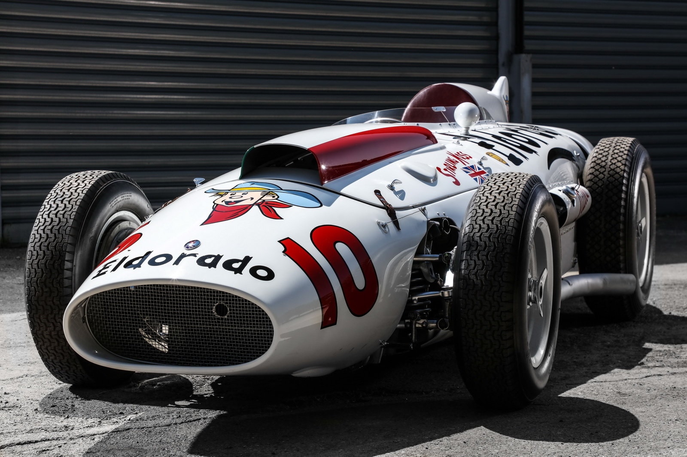
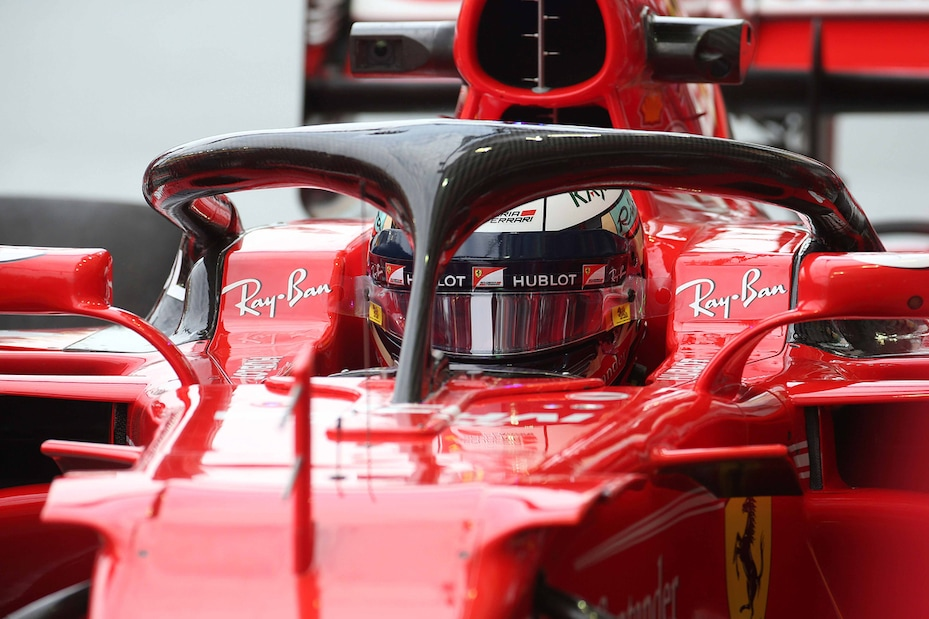
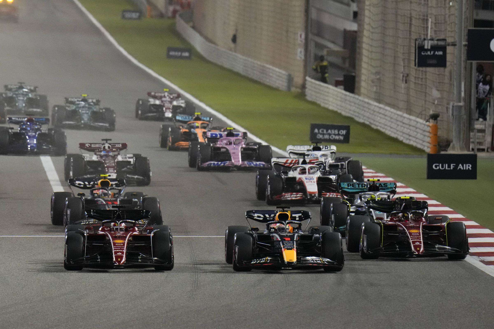

Scopri la storia, la tecnologia e le competizioni delle auto da corsa.
La storia delle auto da corsa inizia alla fine del 1800, con le prime competizioni automobilistiche come la Parigi-Rouen del 1894. Nel corso del XX secolo, le gare si evolvono con eventi iconici come la Formula 1, le 24 Ore di Le Mans e la Mille Miglia. Le competizioni hanno stimolato importanti innovazioni tecnologiche, come l'aerodinamica e l'uso di motori più potenti. Piloti leggendari come Juan Manuel Fangio, Ayrton Senna e Michael Schumacher hanno scritto la storia del motorsport. Oggi, il mondo delle corse è caratterizzato da tecnologie avanzate, come i motori ibridi e le auto elettriche, con la Formula E che rappresenta una nuova frontiera sostenibile per il motorsport.
La tecnologia delle auto da corsa ha subito un'evoluzione straordinaria nel corso degli anni, spinta dalla necessità di migliorare le prestazioni e garantire la sicurezza. Dall'introduzione dei motori più potenti e dei sistemi di sospensione avanzati, fino all'innovazione aerodinamica che ha reso le auto più stabili e veloci. Le competizioni come la Formula 1 e le 24 Ore di Le Mans sono diventate veri e propri laboratori dove vengono testate nuove soluzioni tecnologiche, come i motori ibridi e i sistemi di recupero dell'energia (KERS). Inoltre, i materiali leggeri come la fibra di carbonio e la continua innovazione elettronica, che include sistemi di telemetria e assistenza alla guida, hanno cambiato radicalmente il volto delle corse. Un altro importante passo avanti nella sicurezza è stato l'introduzione dell'HALO, un dispositivo di protezione progettato per proteggere la testa e il collo dei piloti in caso di incidenti. Questo sistema è diventato obbligatorio in Formula 1 a partire dal 2018, offrendo una protezione superiore rispetto ai sistemi precedenti. L'HALO ha dimostrato la sua efficacia in numerosi incidenti, salvando la vita dei piloti in circostanze altrimenti fatali. Oggi, la sostenibilità sta giocando un ruolo sempre più importante, con l'emergere di competizioni come la Formula E, che utilizza auto elettriche per ridurre l'impatto ambientale delle corse.
Le competizioni automobilistiche sono al cuore del mondo delle corse, rappresentando il banco di prova per l'evoluzione tecnologica e il talento dei piloti. La Formula 1, con la sua storia leggendaria, è senza dubbio la competizione più prestigiosa e seguita a livello mondiale. Eventi iconici come le 24 Ore di Le Mans, la Mille Miglia e il Rally di Monte Carlo hanno scritto pagine memorabili del motorsport, attirando milioni di appassionati. Ogni gara porta con sé una sfida unica, che mette alla prova la velocità, la strategia e la resistenza dei team e dei piloti. Le competizioni sono anche il terreno ideale per l'innovazione, dove nuove tecnologie e soluzioni vengono testate sotto le condizioni più estreme. Inoltre, i campionati come la Formula E, che utilizza auto elettriche, stanno dando una nuova dimensione alle corse, promuovendo una sostenibilità crescente e portando il motorsport verso un futuro più ecologico. Queste gare non sono solo una sfida sportiva, ma anche una vetrina delle capacità tecniche e dell'ingegno umano, con il loro continuo sviluppo che affascina e ispira le generazioni future.
